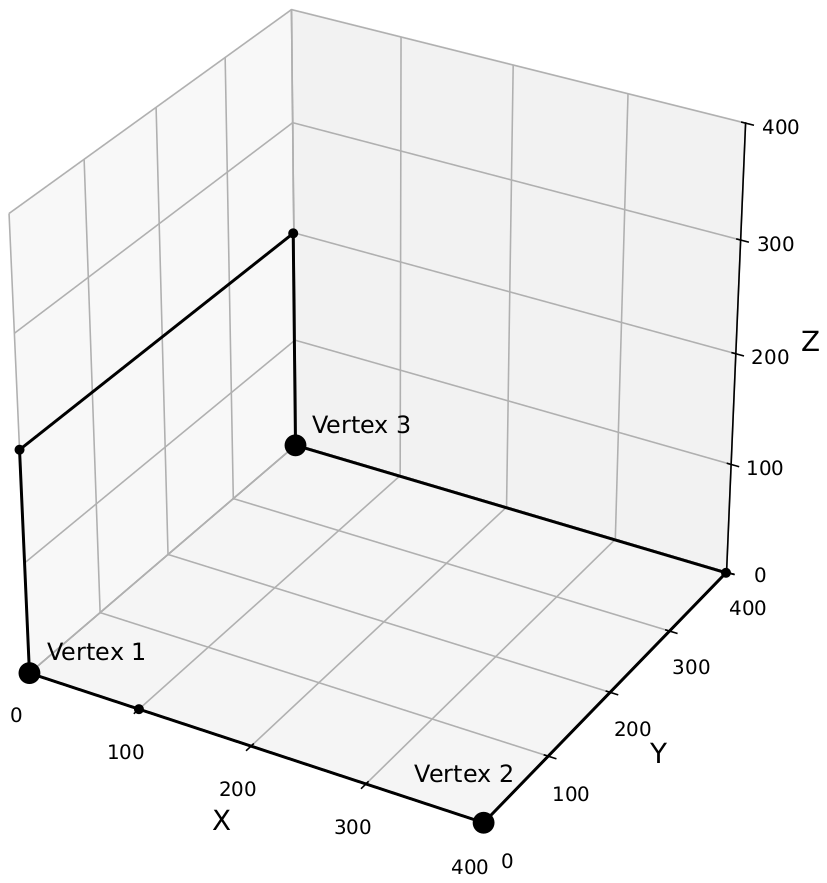

Three-Dimensional Embedding
An embedding of a graph in a space is a way of placing each vertex at a distinct point in that space and drawing each edge as a simple arc connecting its two vertices, so that no two arcs intersect except at a shared vertex. In this problem, we focus on embeddings in a three-dimensional space under certain conditions.
You are given a simple undirected graph with \(n\) vertices and \(m\) edges, which means there is at most one edge connecting any pair of vertices and each edge connects different vertices. The vertices are numbered from \(1\) to \(n\), and the edges are numbered from \(1\) to \(m\). Edge \(j\) connects the two distinct vertices \(v_j\) and \(w_j\). Each vertex is incident to at most five edges.
Find an embedding of the graph such that all of the following conditions are satisfied.
- Each vertex \(i\) is embedded as a point \((x_i, y_i, 0)\) in the space. The coordinates \(x_i\) and \(y_i\) must be integers between \(0\) and \(400\), inclusive. All points must have distinct coordinates.
- Each edge \(j\) is embedded as a polyline (a connected series of line segments) with the embedded points for vertices \(v_j\) and \(w_j\) as its endpoints. Each segment of the polyline must be parallel to the \(x\)-, \(y\)-, or \(z\)-axis. Each node of the polyline must have integer coordinates between \(0\) and \(400\), inclusive. Each polyline must have no more than \(30\) nodes, counting its endpoints.
- Polylines must not have self-intersections. Distinct polylines must not share any point, except when they correspond to edges incident to the same vertex. In that case, they may share only that single endpoint.
Input
The first line of input contains two integers \(n\) and \(m\) (\(2 \le n \le 1600\), \(1 \le m \le 4000\)). The \(j\)-th of the following \(m\) lines contains two integers \(v_j\) and \(w_j\) (\(1 \le v_j \lt w_j \le n\)).
The input guarantees that each vertex is incident to at most five edges. Further, there are no parallel edges; that is, if \(j \ne j'\), \((v_j, w_j) \ne (v_{j'}, w_{j'})\) holds.
Output
First, output \(n\) lines. The \(i\)-th of these lines should contain two integers \(x_i\) and \(y_i\), representing the coordinates where vertex \(i\) is embedded. Then, output \(m\) lines, where the \(j\)-th line represents the polyline corresponding to edge \(j\), using the following format:
\[k \; x'_1 \; y'_1 \; z'_1 \; \cdots \; x'_k \; y'_k \; z'_k\]Here, \(k\) is the number of nodes, which must be between \(2\) and \(30\), inclusive. The points \((x'_1, y'_1, z'_1), \ldots, (x'_k, y'_k, z'_k)\) are the nodes of the polyline. The first point \((x'_1, y'_1, z'_1)\) must be \((x_{v_j}, y_{v_j}, 0)\), and the last point \((x'_k, y'_k, z'_k)\) must be \((x_{w_j}, y_{w_j}, 0)\). Each pair of consecutive points is connected by a segment to form the polyline. Each segment must have a positive length. Two consecutive segments may have the same orientation; for example, both can be parallel to the \(x\)-axis.
The embedding that you output must satisfy all of the conditions mentioned above.
Under the given input constraints, it can be shown that there exists at least one valid output. If there are multiple outputs, any one of them will be accepted.
Notes on special judging:
You are provided with a command-line tool for local testing. You can download the file from DOMjudge. The tool has comments at the top to explain its use.
3 3 1 2 1 3 2 3
0 0 400 0 0 399 3 0 0 0 100 0 0 400 0 0 4 0 0 0 0 0 200 0 399 200 0 399 0 3 400 0 0 400 399 0 0 399 0
Explanation for the sample input/output #1
Figure B.1 illustrates the embedding represented by the sample output.
